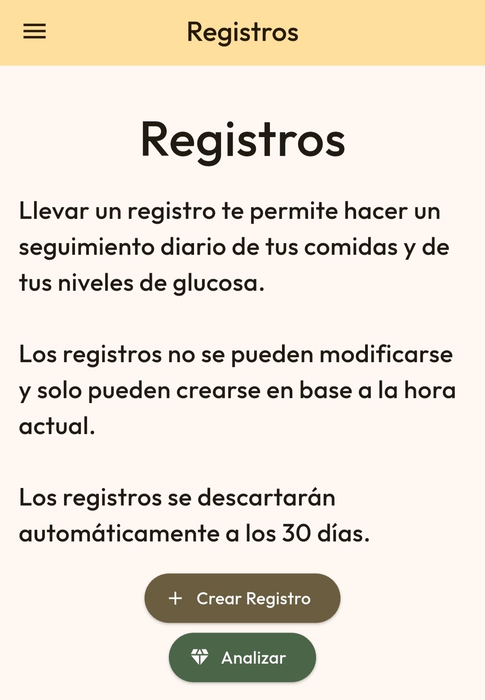
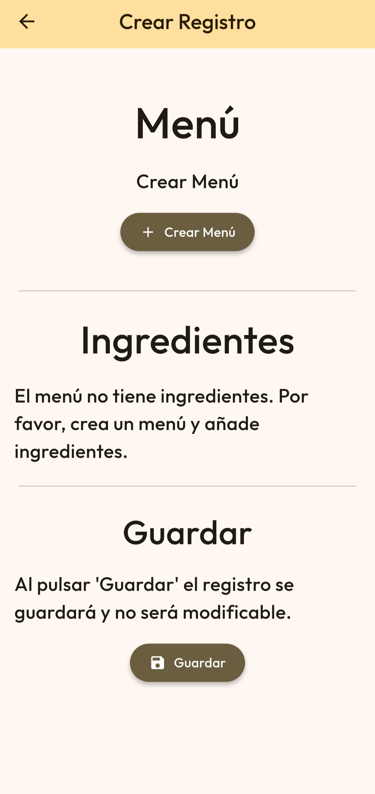
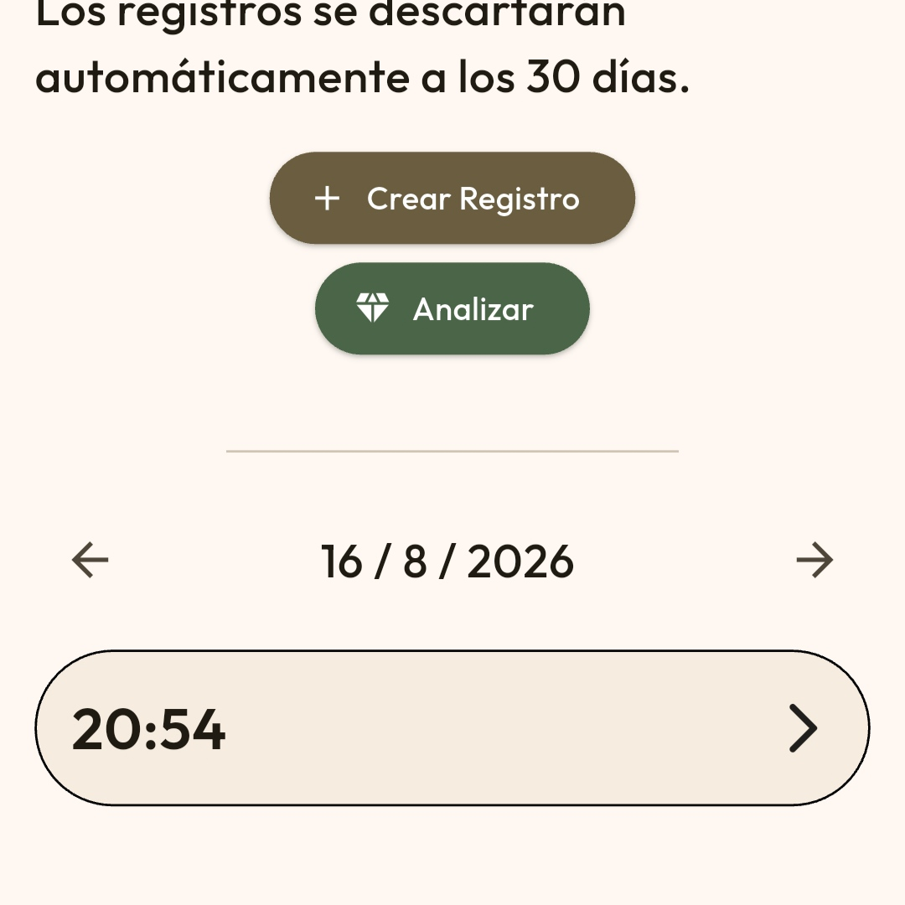
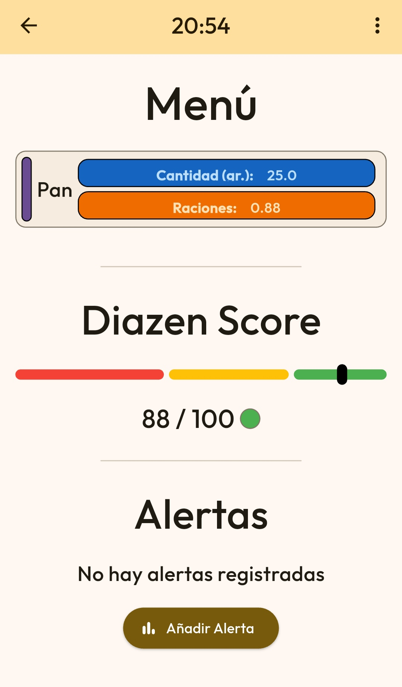
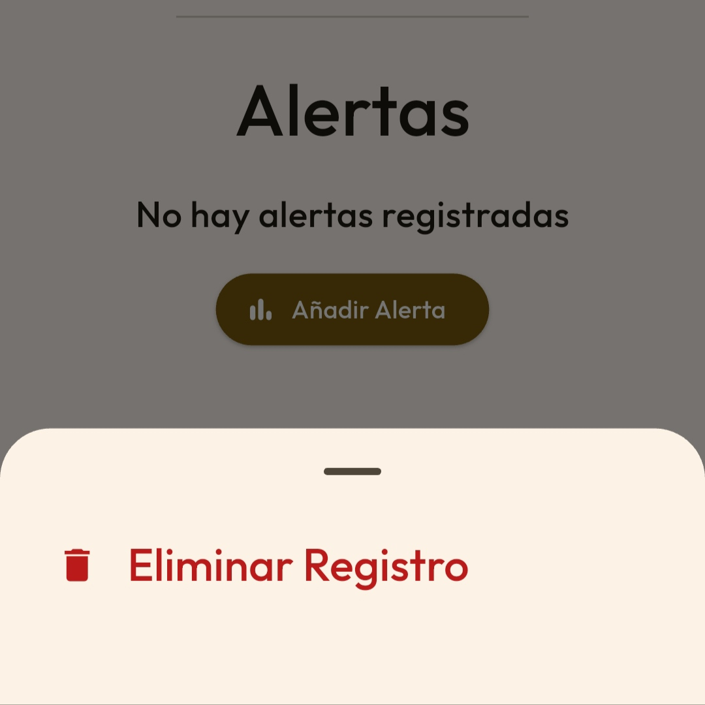
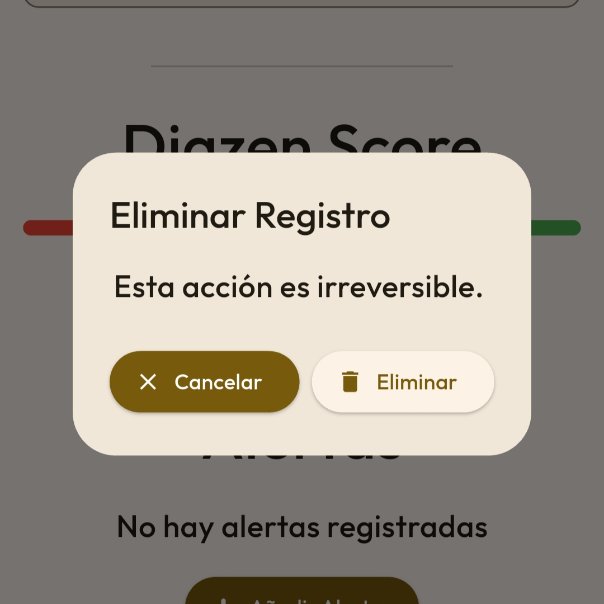
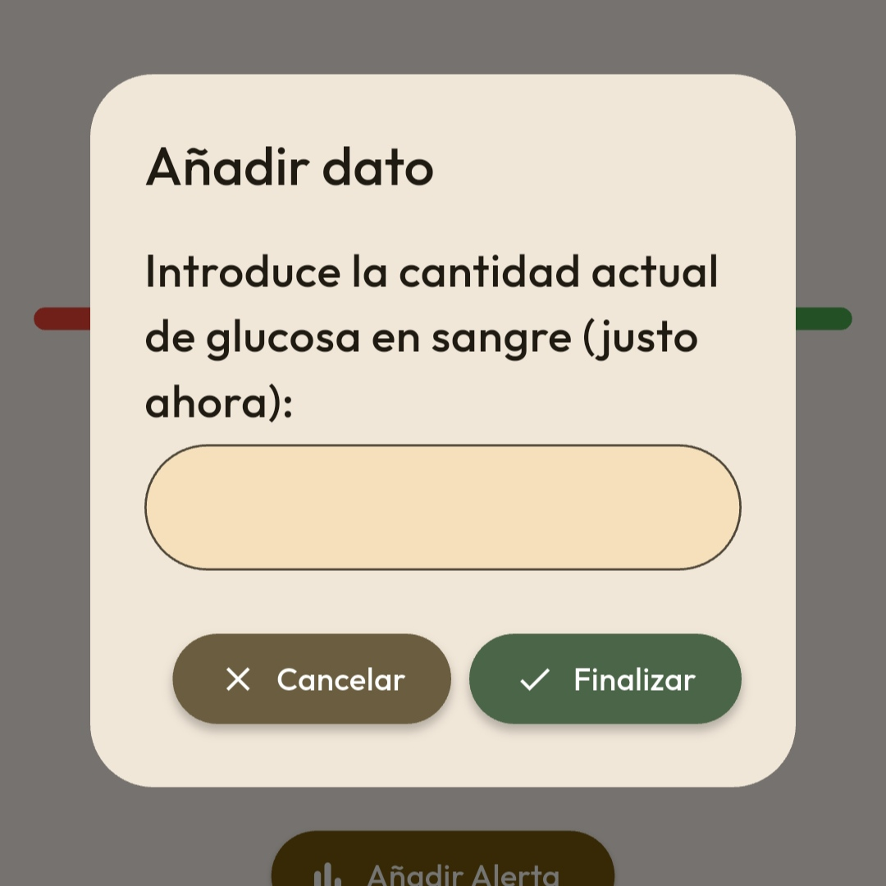
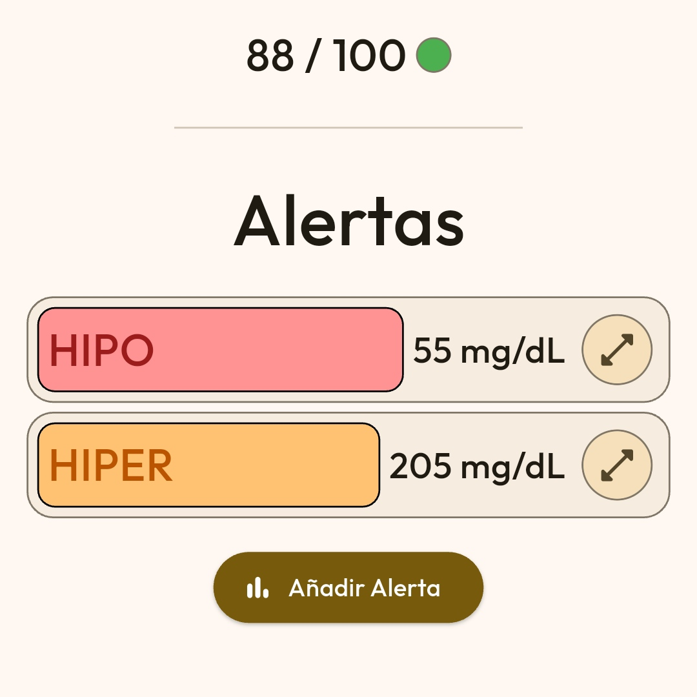
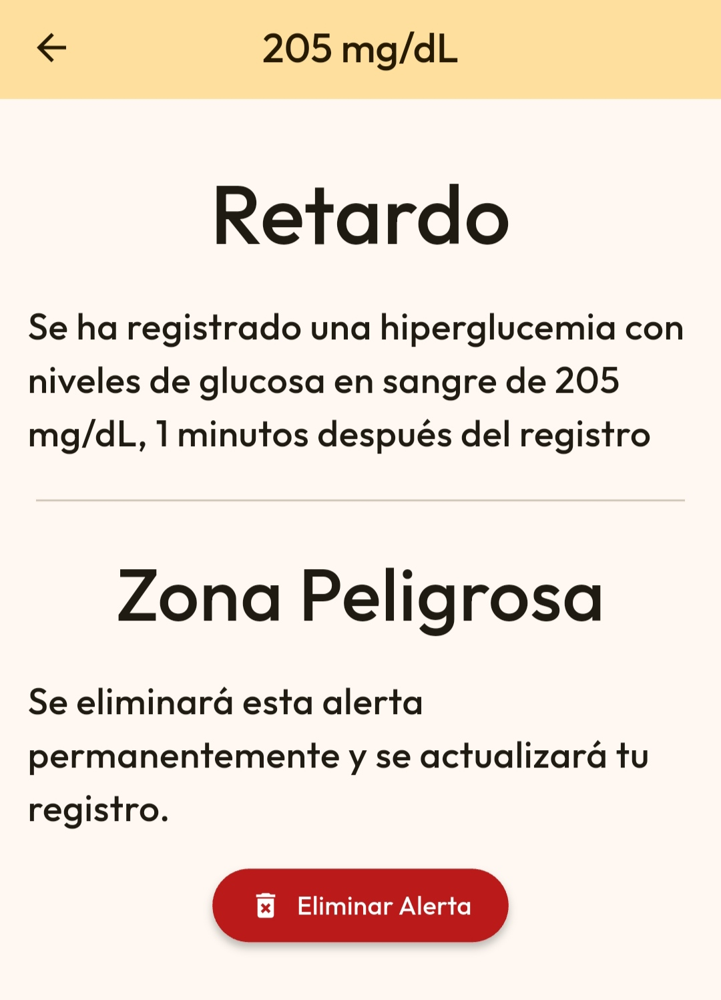
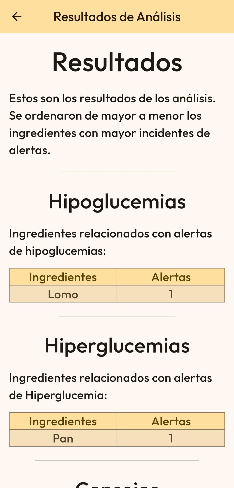

Diazen permite crear registros para mantener constancia sobre las comidas en cada momento.
Un registro se compone de un menú y alertas. Este menú no es editable, pero sí se pueden
añadir alertas en el momento que suceden manualmente.
Puedes ir a la página de Registros y pulsar en "Crear Registro" para crear un nuevo registro.

Se abrirá una nueva página que permite crear un nuevo menú. Pulsa "Crear Menú" para crear el nuevo menú enlazado a este registro. Este menú no es editable una vez finalizado.
Una vez creado ese menú, pulsa "Guardar" para crear el registro. El registro se vincula al día y hora en el que se creó. No es modificable.En el apartado inferior, aparecerá un listado de Registros ordenados por cada día. Pulsa el registro que desees visualizar.

Se abrirá una nueva ventana con información del registro.
Para eliminar un registro, debes encontrarte en la pantalla de previsualización del registro. Pulsa sobre el icono de la esquina superior derecha y selecciona "Eliminar Registro"

Confirma tu eliminación pulsando "Eliminar".
Para añadir alertas, es necesario estar en la pantalla de previsualización. Pulsa "Añadir Alerta" para añadir una nueva alerta. Se abrirá una nueva pantalla que requiere añadir información sobre los niveles de glucosa. Solo se pueden añadir valores de hipoglucemia o hiperglucemia.

Pulsa "Finalizar" para añadir la alerta.
Para previsualizar alertas, es necesario estar en la pantalla de previsualización. Pulsa sobre la alerta deseada para previsualizarla. Se abrirá una nueva pantalla con información sobre la alerta.

Para eliminar una alerta, es necesario estar en la pantalla de previsualización de la alerta. Busca el apartado denominado "Zona Peligrosa" y pulsa "Eliminar Alerta" para eliminar dicha alerta.
Si has activado gratuitamente Apex, puedes analizar
los registros en busca de ingredientes relacionados con hiperglucemias o hipoglucemias.
Ve a la página de registros para analizar tus registros. Pulsa el botón "Analizar"
Al instante verás ingredientes relacionados con hipoglucemias e hiperglucemias y
algunos consejos para mejorar el comportamiento de estos ingredientes.
